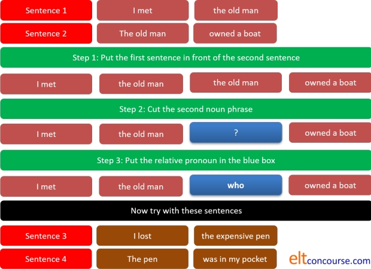
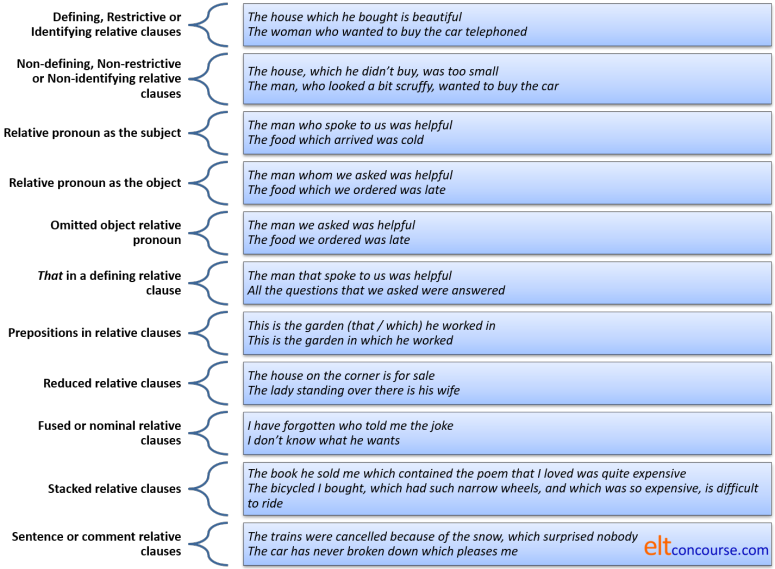

Relative pronoun clauses (aka adjective clauses)

This is quite a long guide.
If you are here for the first time, the advice is to work through it
sequentially but if you are returning to check something, here's a list
of the contents to take you to its various sections.
Clicking on -top- at the end of each section will
bring you back to this menu.
The graphic summary is here.
This guide contains a number of tasks for you to do as you go along. The tasks are designed to make sure you have understood the content. If you don't want to do them, simply click on the links for the answers and read on.
 |
DefinitionsThe dog which howled all night |
Here's a definition from Parrott who avers that relative clauses are:
complex structures which allow the speaker to express themselves
succinctly and fluently
(Parrott, 2000, p. 381)
They actually do rather more than that but it's a good working definition to begin with.
Relative pronoun clauses are usually said to be clauses starting with
who(m), that, which, whose defining or identifying the
noun they follow.
So, for example, in
The dog which howled all night and kept me awake
belongs to my neighbour
The noun, dog, is rendered unique among millions of dogs
because only this one howled and caused a sleepless night.
Relative pronoun clause vs. adjective clause |
In that sentence, the relative clause, which howled all night and
kept me awake, is acting to modify the noun, dog, and that
makes it adjectival in function. For this reason, some analyses
will refer to these structures as post-nominal adjectival modifiers (Celce-Murcia
& Larsen-Freeman, 1999: 571) or adjective clauses (Yule, 1998: 240).
We'll stick with relative pronoun clause here because it is more
familiar but those two descriptors are equally valid. If you
prefer to call these structures adjectival clauses, simple replace
the terms mentally in what follows.
The key point is that relative pronoun clauses modify and/or identify an
already specified noun phrase and in that sense they are akin to
adjectival phrases and clauses.
Relative pronoun clauses also vary from other types of
post-modifiers of nouns in the level of explicitness they bring to
the reference. For example:
The man who waited in the queue
is quite specific about the man and identifies him uniquely, but:
The man waiting in the queue
and
The man in the queue
are both considerably less explicit about the man and there could be
other men in the queue.
The other noteworthy issue is that, because relative clauses are
usually finite (insofar as the verb carries markers for tense and
person), we can identify with greater specificity when the event or
state occurs. In the three examples above, only the first,
with a relative pronoun clause, allows us to set the event in time.
For example:
The man waiting in the queue will make a complaint
The man waiting in the queue has made a complaint
The man in the queue made a complaint
The man in the queue will have made a complaint
etc. in which the tense form is not marked in the subject of the
verb make.
However,
The man who had been waiting in the queue made a
complaint
etc.
sets the waiting in time by its tense form (in this case, past
perfect progressive).
The grammatical function of relative pronoun clauses is one of subordination to which there is
a guide on this site, linked below in the list of related guides at the
end.
That they are subordinate is made clear by their removal from a
sentence. If, for example, we start with:
That's the car which caused the accident
we cannot remove the relative pronoun and leave two well-formed
clauses:
*That's the car. Caused the accident.
Some languages, see below, rely on using adjectival expressions alone to do this task, having nothing remotely like the English relative pronoun structures. For speakers from these language backgrounds, the concepts and meaning are, initially, at least, obscure.
 |
What about adverbs? |
| She told me where to find it |
If you are wondering why where, why, when and how are not
in the list above, the answer is that these words are analysed elsewhere
in the guide to relative adverbs, linked below.
Relative pronouns, as the name
implies, are words which stand for a noun, a gerund, a noun phrase or a
nominalised clause (i.e., different sorts of nouns).
If the word refers to why, where, when or how an action is carried out
or a state exists, it is an adverb, not a pronoun and does not belong
here.
That relative pronouns and relative adverbs appear to be structurally related is not
in question but relative adverbs function differently and perform
different grammatical tasks. Relative adverbs cannot, for example, appear as
the objects or subjects of verbs (because they aren't nouns of any
sort). One relative adverb, how, cannot refer to a noun
at all.
One good reason for keeping the concepts of adverb and pronoun
relative clauses separate is that, as we saw above, relative pronoun
clauses act syntactically and semantically to subordinate one clause
to another. Relative adverbs clauses, on the other hand, are
coordinating and their removal leaves two well-formed clauses which
can stand alone. If, for example, you remove the adverb from:
That's the house where he got married
you get
That's the house. He got married
and, although some sense is lost, the clauses are, nevertheless,
potentially independent.
As we shall shortly see, relative pronouns are distinguished by the
functions they perform in sentences, technically their relationship to
the arguments (most commonly subject, direct object, indirect object
etc.).
Understanding how to use them relies on being able to untangle
the grammatical functions of phrases and clauses in sentences.
Embedding and clause structure |
Before we can discuss meaning, we need to look at the usual
structure of relative pronoun clauses.
If we take two simple sentences such as
The lucky children came to the party
and
The children enjoyed themselves
we can make a single complex sentence as:
The lucky children who came to the party enjoyed themselves
The two simple sentences form what is known as the kernels of the
more complex sentence.
How did this happen?
The first thing to do is identify the Head of the
subject noun phrase. In this case, in the first sentence, it
is the noun children which happens to be pre-modified by
the adjective lucky. In the second sentence the same noun
is not pre-modified by an adjective but in both cases there is a
pre-modifying determiner, the.
Following Chomsky, we can make the rules for doing this conversion, like this:
- Place the second clause after the first noun phrase in the
first sentence (in other words, embed the whole clause within
the second clause).
That gives us:
The lucky children the children came to the party enjoyed themselves - Now delete the second noun phrase:
The lucky children the children came to the party enjoyed themselves - Now replace it with the appropriate relative pronoun, in
this case who because the reference is to people.
That then gives us:
The lucky children who came to the party enjoyed themselves
Later, we shall see how the pronoun can be omitted, too, when we
are dealing with the object noun phrase.
The process above may seem quite simple to speakers of languages
which use relative pronouns in the way that English does.
However, for those whose first languages do not do so, or who use
relative clauses very differently (i.e., most non-Indo-European
languages) it is not a simple transformation and taking people
carefully through the three steps above can pay dividends.
They will require a good deal of practice at doing this for
themselves. (See below for an idea about how to do this.)
If you prefer a diagram, it looks like this:

 |
To see how this is explained in a lesson for learners, watch this short video. |
 |
 |
Defining vs. Non-defining
|
Again, the terminology varies. Here, we will use defining and
non-defining because the terms are the most familiar but the three pairs
of ways to describe the two fundamental types are synonymous.
Here are four sentences to compare:
- The Statue of Liberty, which stands in New York, is well known.
- The Statue of Liberty which stands in New York is well known.
- The statue of Gandhi which stands in Tavistock Square is well known.
- The statue of Gandhi, which stands in Tavistock Square, is well known.
Before you go on, decide which of those sentences you are happy to accept.
 |
Task: What's the difference in meaning between these pairs of sentences? Click here when you have an answer. |
- At the first meeting, which was held yesterday, the chair invited comments from everyone.
- At the first meeting which was held yesterday the chair invited comments from everyone.
- The kids, who came with me, had lunch on the train.
- The kids who came with me had lunch on the train.
- Sentence 1
- contains a non-defining relative
clause.
The fact that the meeting was held yesterday is additional information which can be ignored because the sentence makes sense without it.
We can put the relative clause in brackets with no change in meaning:
At the first meeting (which was held yesterday) the chair invited comments from everyone. - Sentence 2
- contains a
defining relative clause.
We are only talking about the first meeting which was held yesterday. Other meetings were held yesterday but we are only concerned with the first of these. If we move the constituents of the sentence around, we have to move the whole prepositional phrase:
The chair invited comments from everyone at the first meeting which was held yesterday. - Sentence 3
- contains a
non-defining relative clause.
The only kids in question are those who came with me. All the kids had lunch on the train and the extra information that they came with me is additional (and it could appear in brackets, like this) - Sentence 4
- contains a
defining relative clause.
There were other kids (who came alone or with someone else) who had no lunch / had lunch somewhere else. I only know that the kids who came with me had lunch.
Now look again at the first four sentences concerning statues and decide what the issue was. Here's the comment:
| Sentence | Issue |
| The Statue of Liberty, which stands in New York, is well known. | The clause between the commas is simply adding information concerning the location of something known to us all. |
| The Statue of Liberty which stands in New York is well known. | There is only one such statue so to omit the commas would be wrong. You cannot define that which is unique. |
| The statue of Gandhi which stands in Tavistock Square is well known. | There are many statues of Gandhi around the world so to define a particular one by where it is, is acceptable. |
| The statue of Gandhi, which stands in Tavistock Square, is well known. | This is also acceptable. Here we are talking about a statue of Gandhi but adding information to say where it is, not defining it. |
|
|
Task: Try another slightly different example: In the following, why is it not possible to take out the commas in the first sentence or to insert them in the second? Click when you have an answer. |
- The Nile, which runs through Egypt to the Mediterranean, is vital to the country’s prosperity.
- The man who asked me to marry him on that memorable evening is still my husband.
In
Sentence 5, we know there is
only one Nile so we don't need to define it. In fact, defining
it by omitting the commas implies that there is another Nile river
somewhere. The subject of the verb is in the first case is
simply The Nile.
In Sentence 6, we need to identify
the complement of the verb is. The
complement of the verb is is not the man, it is
the man who
asked me to marry him.
Here's a final example in which it is possible to omit or include
the commas with a variation in meaning.
The clothes, which she had never worn, went to the charity
shop
vs.
The clothes which she had never worn went to the charity shop
In the first sentence, the subject of the verb went is
the clothes and the
sentence means that all the clothes went to the charity shop.
In the second sentence, the subject of the verb went is
the clothes which she had never
worn and the sentence means that there were other
clothes which did not go to the charity shop.
It is worth noting here that we use defining relative clauses
only when the noun needs defining. If we take
the sentence:
My twin brother, who lives in France, speaks
excellent French
we know from the outset that the speaker has only one twin brother
and he lives in France. There is no need, therefore, to define
the noun and a non-restrictive clause is used.
However, if we take a sentence such as:
The man who worked in the bar was his twin
brother
we are much more likely to use a defining or restrictive clause
because, semantically, the noun man is so vague (there are,
approximately, 3.6 billion men in the world).
This is not a grammatical issue; it is to do with the type of noun
in question and whether it needs defining so is semantic.
Equally, if the noun in question has already been defined, there is
no need to have recourse to another defining clause. Compare,
for example:
That book over there, which I bought in
Margate, contains the reference I need
with
The book which I bought in Margate contains
the reference I need
In the first case, we have a demonstrative determiner, that,
which defines the book. Moreover, we have the prepositional
phrase over there which further defines the book in
question. Accordingly, a non-restrictive, non-defining clause
naturally follows.
In the second case, we have no such restrictive determiner because
the definite article, while referring to a specific noun, does not
define it. Therefore, in the second case, a restrictive or
defining relative clause is more likely to be used.
In fact, a sentences such as:
That book over there which I bought in
Margate contains the reference I need
is very unusual and
*That book over there with the red cover which I bought
in Margate contains the reference I need
would probably be rejected by most people.
In this case, the issue is neither semantic nor grammatical; it is
pragmatic.
Defining (restrictive or identifying) relative pronoun clauses are by far the most common.
 |
Wh-questions |
When we ask wh-questions, we are forced to use defining clauses because of the nature of the question so, for example, while we can have
- The woman, who(m) you met at the party, is his sister
- The woman who(m) you met at the party is his sister
- The book, which you bought in London, is written by her
- The book which you bought in London is written by her
in which sentences a. and c. contain non-defining clauses which
just add information to the woman and the book
respective and in which sentences b. and d. contain defining
relative clauses which tell us which woman and which
book in particular is the focus of the sentence.
When we make a question, of course, we are concerned to get a
definite answer so the question will contain a defining not a
non-defining clause. We allow, therefore:
- Who is the woman you met at the party?
- Which is the book you bought in London?
but not - *Who is the woman, you met at the party?
or - *Which is the book, you bought in London?
 |
Meaning |
The difference between restrictive / defining and non-restrictive
/ non-defining relative clauses is not just a grammatical wrinkle in
English because the meaning the speaker / writer conveys differs
very significantly depending on which type of clause is used.
The key point is that defining clauses give required
information whereas non-defining clauses give additional
information.
The distinction is a familiar one concerning given and new
information.
For example, in these two sentences, we have a clear distinction in meaning:
- The woman, who arrived at the hotel this evening, has gone out
- The woman who arrived at the hotel this evening has gone out
In sentence a., both speaker and hearer are aware of the existence of
the woman and know to whom reference is being made. The
information about the hotel is new.
In sentence b., this is not the case and the speaker selects the grammar
accordingly because the necessary information to distinguish the woman
in question is needed for comprehension. The assumption in
sentence b. is that the hearer already knows about the woman and
that she arrived at the hotel. The only new information is that
she has gone out.
This is even clearer when we use names rather than common nouns.
Compare, for example:
- Margaret, who arrived at the hotel this evening, has gone out
- Margaret who arrived at the hotel this evening has gone out
In sentence c., the person referred to is known to both speaker and
hearer and the information about the hotel is peripheral but probably
new to the hearer (why else state it?).
Sentence d. is very strange and it is difficult to imagine it ever being
produced unless there are two Margarets to whom reference may be being
made and the speaker needs to disambiguate to refer only to one of them.
In this case, the speaker assumes that the hearer knows there are two
possible people called Margaret to whom reference is being made
and that one of them arrived at the hotel and one did not.
One way to explain this distinction to learners whose languages may
not make any distinction at all between the two types of clause is to
consider a simple attributive adjective phrase in a sentence such as:
The hardworking students passed the examination
which is ambiguous because this may mean either:
The students who worked hard passed the examination
(and other students, less hardworking, did not)
or
The students, who worked hard, passed the examination
(all of them)
and to make it clear what is meant, i.e., to disambiguate the sentence,
we have resorted to the use of a defining or non-defining relative
clause.
For more on how relative pronoun clauses serve to disambiguate, see the
guide to ambiguity, linked below.
It is difficult to signal what is meant by intonation in the adjective
phrase, although stressing the adjective strongly might show that a
restrictive meaning is intended. In the written form, no
punctuation changes can be made to show what is meant, although one
could resort to underlining or other emphasis markers.
The two relative pronoun clauses are much more easily distinguished by
intonation and punctuation signals. See below.
Non-restrictive or non-defining relative clauses are not, naturally, the only way to achieve the effect of post-modifying the noun phrase. There are two non-finite clause types that can function in the same way:
- using an -ing form:
The manager, checking the accounts, noticed the missing money
which could be rephrased as:
The manager, who checked the accounts, noticed the missing money - using a past participle in a passive clause:
The theft, discovered by the manager, was reported to the police
which could be rephrased as:
The theft, which was discovered by the manager, was reported to the police
This kind of post-modification of the noun phrase is generally non-restrictive so the defining or restrictive forms without commas do not provide the same sense:
- The manager who checked the accounts
noticed the missing money
Implies that there were other managers who did not check the accounts. - The theft which was discovered by the
manager was reported to the police
Implies that there were other thefts which remained undetected or that other thefts were detected by other people.
By the same token,
The theft discovered by the manager was
reported to the police
without commas or pausing, can imply that there were other thefts,
undiscovered by the manager, which remained unreported.
It is not possible to have:
*The manager checked the accounts noticed the
missing money
for reasons to which we will shortly turn.
Compressing the data |
The second concern in the field of meaning of relative pronoun clauses is the way in which they can be used to compress information and make communication more efficient. We could state, for example:
The guest complained. The guest was in Room 310. The room is near the air-conditioning fans. The fans make a noise. The noise was the problem.
or we can compress the data with relative clauses to produce:
The guest who was in Room 310, which is near the air-conditioning fans, which make a noise, complained about the noise that they made.
which is more efficient, more fluent and altogether more sophisticated in terms of information packaging. It actually contains four relative clauses, two defining and two non-defining.
 |
Theme and rheme |
The third issue concerning meaning is the way in which relative clauses link themes to rhemes.
If the terms theme and rheme are unfamiliar to you, you can check
the guide on this site, linked in the list of related guides at the
end. For now, however, it is enough to explain that the terms
refer to how longer pieces of discourse are made coherent and
cohesive by the way in which information is linked.
Here's an example, using a relative pronoun clause:
The parents eventually came to collect the children who had been waiting in the rain outside the school. By then, they were soaked through and thoroughly miserable.
In that short passage, the theme is:
The parents and the rheme is all that follows it:
eventually came to collect the children.
The rheme then becomes the theme of the next clause, who,
which stands for the children and the pronoun has its own
rheme:
had been waiting in the rain outside the school
The next clause reiterates that theme as by then, they
which has its own rheme:
were soaked through and thoroughly miserable.
The fact that they were unhappy will, probably, form the next theme
and so on for the rest of the discourse.
All that is relevant here is that one of the common ways that theme-rheme connections are made is via the use of defining relative clauses. Non-defining relative clauses do not do this as, for example, in:
The boss, who came in early every morning, took the call. The contact was from the customer in Canada wanting to know where his consignment was.
in which the theme is The boss, who came in early every
morning (not just the boss) and the theme is took
the call. As we would expect the call forms the
theme of the following part of the discourse with the
consignment following on as the next rheme.
The fact that the boss came in early every morning is
additional information and part of the first theme. It does
not form part of the rheme or go on to be a theme in itself.
The 4 key elements of meaning |
If you find this analysis hard going, it does not matter for now. It is, however, important that you are aware of the fact that relative clauses do four things concerned with meaning:
- They can act to restrict the scope of the subject of a clause by defining.
- They can act on the subject non-restrictively by merely adding information.
- They can make texts cohesive and coherent.
- They can compress information to make texts, whether spoken or written, more efficient in communicating ideas.
 |
Next question |
|
|
Task: If you use phrases like all of which, either of whom, both of which, the majority of whom, none of which etc., would you normally expect to separate the clause off with commas or not? Click here when you have an answer. |
Expressions like some
of, many of + the relative
pronoun introduce non-defining clauses so we get, e.g.,
The children,
all of whom had lunch in the park, went on to visit the museum.
The men, either of whom could
have been her brother, arrived very late.
The houses, the majority of which are Victorian, line both sides of
the street.
So, yes, we need the commas because we do not define the noun
with these expressions, we add information to it.
 |
Pronunciation |
Pronunciation issues with relative clauses concern tone groups in particular.
|
|
Task: In written English, commas are used to distinguish the two types. How does this work in spoken English? Click here when you have an answer. |
In
written English, commas are used in non-defining
clauses only. In spoken English, the distinction is in the phrasing
and tone or key.
Try saying sentences 1 and 2 aloud. Here they are again:
- At the first meeting, which was held yesterday, the chair invited comments from everyone.
- At the first meeting which was held yesterday the chair invited comments from everyone.
You will find that when you say a non-defining / non-restrictive relative clause, sentence 1., two things happen:
- You insert a slight pause before the relative pronoun (and often, after the relative clause itself).
- Your voice tone lowers and you may speak more quickly and quietly when you say the relative clause.
It looks like this:
- Non-defining / non-restricted relative clause:
-

- The voice tone falls on the relative clause and it is usually spoken
more quickly with small pauses before and after it.
In this case, the prepositional-phrase adverbial which pre-modifies the verb invited is just At the first meeting
- Defining / restricted relative clause:
-

- The voice tone rises towards the end of the relative clause and the
key information may be spoken more slowly and emphatically.
If the key information concerns the fact that this was the first meeting among many held yesterday, the pitch across the sentence may look rather different but still be distinguishable as a defining relative clause:

- In both latter cases, the adverbial phrase pre-modifying the verb invited is At the first meeting which was held yesterday.
The other pronunciation issue is that the relative pronouns
who and that in particular are usually unstressed to
the point of inaudibility and may not be audible at all to learners.
This leads to a certain ambiguity of structure so, for example:
The man who bought the car is here
may be heard as
The man bought the car is here
and that, in turn, could persuade learners that the subject relative
pronoun is omissible when it isn't.
A little attention to severely unstressed syllables in rapid speech
is called for to allow learners to identify the target structure
accurately.
 |
Memory test |
 |
Task: There are five central relative pronouns in English, listed at the top of this page – what were they? Click here when you have written them down. |
| pronoun | use | examples |
| who | subject or object pronoun for people | The students who had the party are now living over there. |
| which | subject or object pronoun for animals and things |
|
| referring to a whole clause or previously mentioned idea (only which can do this) | They fell in love and got married the following month which surprised everyone. | |
| whom | object pronoun only for people (especially in non-defining relative clauses and formal) | Melissa, whom I met at the party, invited me. |
| whose | possession (a genitive pronoun) | Did you know the man whose sister married the vicar? |
| that | subject or object pronoun for people, animals and things in defining relative clauses (who or which are also possible) |
|
These are called central relative pronouns because they are usually all that are considered. However, ...
The use of the pronoun what as a relative pronoun
occurs but is
confined to a special kind of relative clause called a nominal
or fused relative clause and that is explained below. Here
is one example:
I told him to do what he likes with the money.
Also in fused relative clauses, the -ever series
of pronouns (whoever, whatever etc.) are analysable as
relative pronouns as in, e.g.:
I gave food to whoever seemed to need it.
 |
A sixth relative pronoun |
Although the use is rare and probably dying out, the word
as can function as a relative pronoun in limited
circumstances. For example, we can obviously have:
The people who came to
the meeting were delighted
and we have a simple relative pronoun structure with the pronoun
who. We can also have, however:
Such people as came to
the meeting were delighted
and, while there is a sense that not enough people came, the
word as is functioning as a relative pronoun.
The word only functions in this role following such and
only works as a defining relative clause.
Your learners may encounter it but whether it should be brought to their notice or taught deliberately is certainly questionable.
We shall also see, below, that the pronoun what may be considered a relative pronoun in limited circumstances.
 |
Cases and concord |
These are connected issues so we will treat them together here.
 |
Case |
There are three cases in English grammar which can be distinguished
in relative clauses and in other parts of the pronoun system.
We shall see below that the case of the pronoun is important in
terms of structure.
Here's a quick reminder of what they are:
- subject or nominative case
- The nominative case is represented by three relative
pronouns:
- who: is used to refer to people for the most
part, although animals also qualify for its use in certain
circumstances and so do groups of people represented by
collective nouns. For example:
The person who asked the question was happy with the answer
It wasn't my dog who barked all night
The committee who considered the case were ill chosen
The family who booked the holiday cottage failed to arrive - which: is used to refer to objects, places and
animals with little personal connections even when gender is
clear. The pronoun may also represent a group of
people. For example:
Athens, which is the capital city, contains almost half the total population of Greece
Is she the cow which attacked you?
The team which won was always favourite
Rarely, which may refer to people unconnected to the speaker so we may hear, for example:
The child which came top of the class got a prize
Any personal connections forbid the use of which so:
*My child, which came top of the class, got a prize
is almost certainly not allowable. - that: is an alternative to both who
and which and can be used for personal and
non-personal reference. For example:
The person that asked the question was happy with the answer
It wasn't my dog that barked all night
Is she the cow that attacked you?
The team that won was always favourite
- who: is used to refer to people for the most
part, although animals also qualify for its use in certain
circumstances and so do groups of people represented by
collective nouns. For example:
- object or accusative case
- The accusative is represented by four relative pronouns:
- who: is used to refer to people for the most
part, although animals also qualify for its use in certain
circumstances and so do groups of people represented by
collective nouns. For example:
The person who I asked knew immediately
My dog, who I love dearly, is getting very old
The committee who we asked to consider the case were useless - whom: can
only be used in the accusative and is
used to refer only to people, or collections of people.
For example:
Peter, whom I like a lot, can be a difficult person
The policeman whom I gave the report to didn't seem interested
It is sometimes averred that whom is only formal, unnecessary and disappearing but it is frequently seen in academic writing and in some circumstances is unavoidable so:
The man to whom I gave my address is over there
is acceptable, if formal, but
*The man to who I gave my address is over there
is not.
The pronoun whom is rarer with reference to collectives of people:
?The committee whom we asked to consider the matter is useless - which: is used in the same way in the
accusative as it appears in the nominative (for places,
objects and unconnected animals):
Athens, to which I flew on Thursday, is my favourite European city
The newspaper which I bought at the airport was two days old
That's the cow which he bought last week
The team which I support won - that: is an also an alternative in the
accusative to whom, who and which and can
be used for personal and non-personal reference. For
example:
The person that I asked had no idea
This is the book that I bought today
- who: is used to refer to people for the most
part, although animals also qualify for its use in certain
circumstances and so do groups of people represented by
collective nouns. For example:
- possessive or genitive case
- The genitive case is only represented by whose. This
pronoun may never be omitted. There are some issues with
it:
- The genitive represents more than simple possession and
the pronoun whose can be used for four out of five of the
types of genitive. Like this:
Possession:
The boy whose case was stolen is waiting outside
Subjective (referring to the subject):
That's the man whose reaction was so violent
Origin:
My friend, whose email I received today, is coming to visit
Objective (referring to the object):
The criminal whose early release caused a controversy is on TV tonight
However, there is no relative pronoun use for the descriptive genitive so:
*The hour whose work it is
is not available to be formed from
It's an hour's work - The pronoun whose need not refer to people but there is
an avoidance issue for most native speakers. Many are
happy to accept, for example:
The ship, whose captain was asleep, hit a rock
but less happy with
The hotel whose rooms are most comfortable is The Grand
and very dubious of
?The house, whose price is £200,000, has been sold
Avoiding the pronoun in these cases, however, leads to some clumsiness and
The ship, of which the captain was asleep, hit a rock
The hotel in which the rooms are most comfortable is The Grand
The house, the price of which is £200,000, has been sold
are seen by many speakers to be clumsy and also avoided so the thoughts may be rephrased as:
The captain of the ship which hit a rock was asleep
The Grand is the hotel which has the most comfortable rooms
The price of the house which has been sold is £200,000.
- The genitive represents more than simple possession and
the pronoun whose can be used for four out of five of the
types of genitive. Like this:
 |
Concord |
Concord refers to the agreement between the noun and the verb and
is usually not problematical so we have
The house which he bought was poorly maintained
The houses which they bought were poorly maintained
and so on.
There is a small problem with collective nouns, however, because:
- When they are represented by which, the verb is
usually singular:
The committee which must decide the issue meets tomorrow - When they are perceived as human and represented by who
the preference is a plural verb form:
The committee who must decide the issue meet tomorrow
We saw above that expressions such as all of which,
either of whom,
both of which,
the majority of whom,
none of which etc. occur in non-defining
relative pronoun clauses but concord is sometimes an issue.
For example:
The cake, all of which was eaten, was
delicious
The people, all of whom were asked the same question, were
unanimous
The children, neither of whom takes the bus to work, are
usually late.
The books, none of which ?was / ?were available, would have
been most helpful.
Teaching issues connected to concord are discussed below and there is also a link to a guide to the area at the end.
 |
Subject or Object? |
It's important to know whether the relative pronoun is acting as the subject or the object of the verb.
|
|
Task: Is the relative pronoun in the following examples the subject or object of the verb? Look at the underlined clauses. Click when you have an answer. |
- The man who bought the tickets really is just being generous
- The tickets, which hopefully will allow us entry, are very welcome
- The man that we thanked seemed genuinely surprised
- The tickets which he bought were quite expensive
- Only the senior doorman, who we gave the tickets to, noticed that they were fakes
Here are the answers:
-
The man who bought the tickets really is just being generous
– subject – the pronoun who is followed by
the verb phrase (bought) and the object (the tickets).
We can rephrase the first part of the sentence as
The man bought the tickets (Subject – Verb – Object)
so the pronoun who is the subject of the verb buy. - The tickets, which hopefully will allow us entry, are very
welcome – subject again – which is followed by the
verb phrase hopefully will allow us
(although, to be strict, this is a verb phrase, will
allow, pre-modified by the adverb hopefully, plus a
noun phrase rather than a verb phrase per se.
Verb phrases proper contain only verb forms).
We can rephrase the first part of the sentence as
The tickets will hopefully allow us entry (Subject – Verb – Object)
so the pronoun which is the subject of the verb phrase will allow. - The man that we thanked seemed genuinely surprised – object
– that is the object of we thanked
We can rephrase the first part of the sentence as
We thanked the man (Subject – Verb – Object)
so the pronoun that stands for the man and is the object of the verb thank. - The tickets which he bought were quite expensive –
object – which
is the object of he bought
We can rephrase the first part of the sentence as
He bought the tickets (Subject – Verb – Object)
so the pronoun which is the object of the verb buy. - Only
the senior doorman, who we gave the tickets to, noticed
that they were fakes – indirect object after preposition to
We can rephrase the first part of the sentence as
We gave the tickets to the senior doorman (Subject – Verb – Direct Object – Indirect Object)
so the pronoun who is the indirect object of the verb give.
 |
Two simple rules |
Rule #1:
If the relative pronoun is followed directly by a verb phrase, it’s the subject.
So, in
The man who just bought the car
the
relative pronoun, who, is followed directly by the
modified verb
phrase, bought. This means that the relative
pronoun stands for the subject of the verb.
Rule #2:
If the pronoun is not followed by a verb phrase (but by a noun phrase or pronoun) it is the object.
So, in
The book which she bought was a first
edition
the relative pronoun, which, is followed
by a pronoun, she, so it cannot be the subject of the
verb. The relative pronoun stands for the object of the
verb and can be, and routinely is, omitted.
Relative pronouns may also refer to indirect objects (as in
11. above). For example, we can get from:
She read the children a story. The
children were delighted.
to
The children to whom she read a story
were delighted.
Because the indirect object can frequently be moved and
introduced using to or for (a process
called dative shifting) the usual form of such relative clauses
follows that of relative pronouns as objects of prepositions
(see below).
Other examples are:
The dinner which he ordered for us was
delicious
The people for whom she cooked dinner were grateful
The relative pronoun may, as it stands for an object, be
omitted but when this happens the preposition is often left, so
to speak, stranded, and we get:
The children she read a story to were
delighted
The dinner he ordered for us was delicious
The people she cooked dinner for were grateful
By its nature, the pronoun whom is usually preferred to who in such formulations because it is an object-case only pronoun.
 |
Omitting the relative pronoun |
Now we have the subject-object distinction clear, we can see
why it is important in English to know which grammatical
function the pronoun is performing.
In focus here is what as known as the zero or Ø relative
pronoun. The clause structures are unchanged, but the
pronoun may, in some circumstances, be omitted.
|
|
Task: In which of sentences 7 – 11 can you omit the relative pronoun? Why (not)? Here they are again:
|
In Sentences 9 and 10
only, we can omit the relative
pronoun because it is the object of a defining relative clause.
We can have, therefore
The man we thanked
or
The man that
/ whom we
thanked
but we can't have
*The man bought the tickets really
is just being generous
Why?
Here are five more examples to check. In which of these can we omit the relative pronoun?
- The book which I read yesterday is on the shelf
- The man who gave you the money is very generous
- The children who came late were punished
- The water which he drank made him unwell
- The spider, which he killed, was quite harmless
Here are the rules:
 |
Subject relative pronouns must always be used. |
In sentences b and c, the
relative pronoun is the subject of the verb because we can
rephrase them like this:
The man gave you the
money
The children came late
and we cannot omit the relative pronoun because that leaves
the unacceptable:
*The man gave you the money is very
generous
and
*The children came late were punished
In Sentences 7 and 8 the relative pronoun is
the subject (followed by verb phrase) in 9, 10
and 11 it’s the object (followed by pronoun or noun phrase).
We can have
The man who bought the
tickets really is just being generous
but not
*The man bought the tickets really
is just being generous
and
The tickets, which hopefully will
allow us entry, are very welcome
but not
*The tickets, hopefully will allow
us entry, are very welcome
and
The man we thanked seemed
genuinely surprised
and
The man
that / whom
we
thanked seemed genuinely surprised
and
The tickets he bought
were quite expensive
and
The tickets
that / which
he bought were quite expensive
and
Only the senior doorman,
who(m) we
gave the tickets to, noticed that they were fakes
but not
*Only the senior doorman, we gave
the tickets to, noticed that they were fakes
 |
Object pronouns can be dropped ... |
In sentences a and d, the
relative pronoun is the object of the verb
because we can rephrase them like this:
I read the book
The man drank the water
so, leaving out the relative pronoun and arriving
at
The book I read yesterday is on the
shelf
and
The water he drank made him unwell
is acceptable.
 |
... but only in defining relative clauses. |
In sentence e, we have
commas after the spider and killed. We know that
it is a non-defining relative clause and the commas could be
replaced by brackets with the same meaning:
The spider (which he killed) was quite harmless
We cannot omit the relative pronoun because that leaves us
with the unacceptable:
*The spider, he killed, was quite harmless
Sentence 10 is a defining relative clause so it's
OK to leave out the relative pronoun. Sentence 11 is
non-defining so the relative pronoun can't be left out.
The reason for this lies in the meaning that the two sorts of
clauses signal. We saw above that non-defining or
non-restrictive relative clauses add new information but
defining or restrictive clauses rely on the speaker / writer
and the hearer / reader sharing the information necessary to
understand what the subject of the clause is.
In order to signal the new information contained in a
non-defining clauses, the pronoun is necessary because without
it the hearer / reader cannot know to what the new information
refers.
 |
We can never omit whose. |
We can have:
The man whose tickets we stole
but not
*The man tickets we stole
 |
We can never omit as. |
In the rare instances of its use, the pronoun as cannot
be omitted so while we may say:
Such houses as have large gardens attract
more taxes in my country
but not:
*Such houses have large gardens attract more
taxes in my country
The four other relative pronouns, who, whom, which, that,
can be omitted subject to Rules 1, 2 and 2a above.
I.e.: the clause must be defining and the relative pronoun must be the
object of the verb.
When the object pronoun is omitted in these cases, the resulting relative pronoun clause is often referred to as a contact clause.
 |
Audibility |
As was touched on above under the pronunciation issues,
because, very frequently, both who and that
are sub-audible even to native speakers we sometimes encounter
utterances in which the subject relative pronoun appears to be
omitted so we may hear:
Anybody wants to come is welcome
but certainly in the written form most speakers would reject
such a sentence as malformed and even in all but the most
colloquial and rapid speech most would consider the sentence at
least an example of laziness.
It is worth alerting learners to the fact that the relative
pronoun may be very difficult to hear in rapid speech.
Phonemically, the very rapid pronunciation may be transcribed
without the /h/ on who or the /ɪ/ on is as:
/ˈe.ni.bɒ.di.uː.wɒnts.tə.kʌm.z.ˈwelkəm/
rather than the more careful:
/ˈe.ni.bɒ.di.huː.wɒnts.tə.kʌm.ɪz.ˈwelkəm/
 |
Using that |
| The man that she met |
Originally, incidentally, the word that was only a singular
neuter pronoun with the plural form those and it is still used
in that way, of course. It has, however, been altered by a process
known as grammaticalisation into a purely functional word which, in the
case of relative clauses, does not carry the sense of plurality so we
can have, for example:
I'd like that hat and those gloves
but the word has been grammaticalised in Modern English and now
functions as a relative pronoun in, e.g.:
The books that I gave her
where it is unmarked for plural or singular and we cannot allow the more
logical
*The books those I gave her.
Here are the example sentences again with some more at the end:
- At the first meeting, which was held yesterday, the chair invited comments from everyone.
- At the first meeting which was held yesterday the chair invited comments from everyone.
- The kids, who came with me, had lunch on the train.
- The kids who came with me had lunch on the train.
- The Nile, which runs through Egypt to the Mediterranean, is vital to the country’s prosperity.
- The man who asked me to marry him on that memorable evening is still my husband.
- The man who bought the tickets really is just being generous
- The tickets, which hopefully will allow us entry, are very welcome
- The man that we thanked seemed genuinely surprised
- The tickets which he bought were quite expensive
- Only the senior doorman, who we gave the tickets to, noticed that they were fakes
- The man whom we met turned out to be his brother.
- The man who met us was his brother.
- The table which I wanted had been sold.
- The table which cost too much was the only one left.
|
|
Task: In which of these sentences 1 – 15 can that be used as the relative pronoun instead of who(m) or which? What's the rule? Click here when you have an answer. |
We can use that as the relative pronoun in sentences
2, 4, 6, 7, 9 (obviously), 10, 12, 13, 14 and 15.
We cannot use that in sentences 1, 3, 5, 8 and 11.
The possible and the incorrect (marked * and in
red) sentences then are:
- *At the first meeting, that was held yesterday, the chair invited comments from everyone.
- At the first meeting that was held yesterday the chair invited comments from everyone.
- *The kids, that came with me, had lunch on the train.
- The kids that came with me had lunch on the train.
- *The Nile, that runs through Egypt to the Mediterranean, is vital to the country’s prosperity.
- The man that asked me to marry him on that memorable evening is still my husband.
- The man that bought the tickets really is just being generous
- *The tickets, that hopefully will allow us entry, are very welcome
- The man that we thanked seemed genuinely surprised
- The tickets that he bought were quite expensive
- *Only the senior doorman, that we gave the tickets to, noticed that they were fakes
- The man that we met turned out to be his brother.
- The man that met us was his brother.
- The table that I wanted had been sold.
- The table that cost too much was the only one left.
What’s the rule?
The pronoun that can only be used in defining relative clauses (and then it’s more informal).
When a preposition is used, there are restrictions on where in the syntax it can appear when that is the relative pronoun and the issue is explained in the next section.
By the way, there is a structure in English using that which
looks a bit like a relative clause but isn't and it will confuse
learners if you introduce it alongside proper relative pronoun clauses.
It occurs in, for example:
It was because I felt ill that I had to go to bed
The word that is not, in this case a pronoun at all, arguably,
because there is no noun for it to represent.
It is better analysed as a cleft sentence, to which there is a guide on
this site linked in the list of related guides at the end.
 |
Style |
Stylistically, as the rule states, relative clauses formed
with that as the pronoun are considered less formal and
some would avoid the use of the pronoun in formal writing and
speech.
There are, however, some points to make here:
- The style rule holds when that is used to represent
a subject person. So, for example:
The guests who arrived late
is more formal that the synonymous:
The guests that arrived late. - However, the pronoun that is often preferred to
represent the object of the verb, even when it refers to people
because some feel uncomfortable with the use of whom or
simply want to avoid having to decide whether to use it at all.
So, for example:
The guests whom he invited
The guests who he invited
The guests that he invited
are all considered acceptable and the second two of equal formality.
Nevertheless, in formal writing and speech, the use of whom is still conventional. - The stylistic difference is much less obvious when that
is used to represent a non-personal entity, either as the
subject or the object of the verb, so, for example:
The book which I bought
The book that I bought
The train that arrived
and
The train which arrived
are more or less synonymous, even stylistically, although even here some would consider the use of which as more formally correct.
Prepositions in relative clauses |
Prepositions sometimes cause a few problems for learners.
|
|
Task: The following sentences contain prepositions. How are these significant? What are the rules for dealing with prepositions in relative pronoun clauses? Click here when you have an answer. |
- This is the car in which he arrived
- This is the car that he arrived in
- This is the car he arrived in
- This is the person with whom he arrived
- This is the person who(m) he arrived with
- This is the person he arrived with
Rule #1:
The relative pronoun is usually the object of a preposition so it can often be omitted, leaving only the preposition in place.
Rule #2:
The preposition is moved to the end in informal language.
Oddly, some prepositions do not allow post-positioning at all
or produce very doubtfully correct clauses. None of the
following is clearly acceptable, therefore:
*The war that she fought during
*The people that it was important according to were asked
?The person that she is most unlike is her mother (although The person
that she is like is her mother is acceptable)
*The time that we were limited up to was
too short
and in all these cases the preferred formulation is to place the
preposition before the relative pronoun:
The war during which she fought
The people according to whom it was important were asked
The person whom she is unlike
The time up to which we were limited was too short
It is also often the case that, stylistically, complex
prepositions are often not post-positioned so most would prefer:
The issues in spite of which he carried
on were serious
to the more questionable:
?The issues he carried on in spite of
were serious
By some analyses, prepositional phrases are an oddity because
they behave more like clauses having a preposition (the head of
the phrase) and an object, otherwise called the complement.
So, for example, the relative pronoun can stand for a
prepositional object and we can get from:
He spoke with the woman. The woman
is my sister
to
The woman with whom he spoke is my sister
or
The woman (who/m) he spoke with is my
sister
 |
Restriction with that and Ø |
There is a serious restriction on preposition positioning when the relative pronoun is that or Ø which is not parallelled in other languages and causes some difficulty.
- When a wh- word is the pronoun, the preposition
can occur before the pronoun or be postpositioned so we
allow all the following:
The woman I spoke to
The woman who(m) I spoke to
The woman to whom I spoke
The car I came in
The car which I came in
The car in which I came - However, when we use that as the pronoun, the
preposition must be postpositioned so we
allow, e.g.:
The car that I came in
The woman that I spoke to
but neither:
*The car in that I came
nor
*The woman to that I spoke
is acceptable. - A further restriction concerns the zero (Ø) relative or omitted
pronoun. We do not allow, e.g.:
*The woman to I spoke
but:
The woman Ø I spoke to
The woman to whom I spoke
and
The woman that I spoke to
are all acceptable.
Again, the preposition must be postpositioned.
The choices are therefore reduced like this:

(Based, rather loosely, on Quirk &
Greenbaum, 1973:381)
 |
Reduced relative clauses |
Consider these sentences:
- The woman in the garden is my mother
- The woman outside is my mother
- The customers, unhappy with the work, complained
- The kid acting the fool is my sister
- The house built by his father is still his only home
- The woman, an expert on gardening, is helping my mother
|
|
Task: When is it possible to omit both the relative pronoun and the verb be? Click here when you have an answer. |
We can ellipt the pronoun and the verb be if:
Rule 1:
The verb
be
is
followed by a prepositional, adverbial or adjectival phrase
Sentence 22. is a prepositional reduced
relative clause and can be expressed as:
The woman who is in the garden is my
mother
Sentence 23. is an adverbial reduced
relative clause and can be expressed as
The woman who is outside is my mother
Sentence 24. is an adjectival reduced relative clause and can be
expressed as:
The customers, who were unhappy with the
work, complained
Rule 2:
The verb is in the progressive
aspect
Sentence 25. is a participle reduced relative
clause and can be expressed as:
The kid who is acting the fool is my sister.
The reduction can also apply to
any other progressive tense form so we can also express, for
example:
The kid who was / has been / had been acting the fool was my
sister
as
The kid acting the fool was my sister
Rule 3:
The verb
be forms part of a
passive verb phrase
Sentence 26. is also a participle reduced
relative clause (in this analysis) but in this case it is the
passive markers which have been ellipted and it can be expressed
as:
The house which was built by his father
is still his only home
Rule 4:
The noun phrases are co-referential
Sentence 27. is an appositive reduced relative
clause (which means that the two noun phrases are co-referential
– they refer to the same person). This can be expressed
as:
The woman, who is an expert on gardening, is helping my
mother
 |
Restrictions on reduced relative clauses |
Some restrictions to what is possible with the types of reduced relative clauses exemplified here apply. The restrictions arise from the nature of the verb be concerning whether it is functioning as a copula or as an auxiliary forming a progressive or passive form.
- Prepositional and adverbial relative clauses
are nearly always defining relative clauses. So, for example, we can allow:
The woman, who is at number 14, will arrive later
to be reduced to
The woman at number 14 will arrive later
but the sense will be that the woman is now defined by her location rather than her location being additional information.
By the same token, reducing:
The woman, who is outside, will arrive later
to
The woman outside will arrive later
means that it becomes a defining structure rather than simply adding information concerning the woman.
Informally, the distinction may occasionally be retained so we can also allow, in spoken language:
The woman, at number 14, will arrive later
and
The woman, outside, will arrive later
and in both cases, the non-defining nature of the clause is maintained but the use is generally disparaged in more formal language and is probably not one with which to trouble learners unduly. - -ing participial relative clauses
can retain the sense of defining or non-defining clauses.
We allow, therefore:
The kid who is acting the fool is my sister
to be reduced to
The kid acting the fool is my sister
and in both cases we have a defining relative construction.
However, we can also reduce both:
The woman, who is waiting outside, wants to speak to you
and
The woman who is waiting outside wants to speak to you
to
The woman, waiting outside, wants to speak to you
or
The woman waiting outside wants to speak to you
retaining the distinction between defining and non-defining clauses.
It is the case however that such reductions are usually only applied to defining clauses. - Adjectival clauses
retain the distinction between defining and non-defining clauses. So, in our example above:
The customers, who were unhappy with the work, complained
and
The customers who were unhappy with the work complained
can be reduced to:
The customers, unhappy with the work, complained
or
The customers unhappy with the work complained
but the sense in the first is that all the customers were unhappy with the work and complained and in the second case, only the customers who were unhappy complained, while others, presumably, being happy with the work, did not complain. - Reduced passive relative clauses
have some exceptional characteristics because of the role that is played by the verb be in them.- Passive reduced clauses can be both defining (as in
example 26.) or non-defining so we allow, e.g.:
The house, built by his father, is still his only home (non-defining)
and
The house built by his father is still his only home (defining) - In reduced passive clauses the tense marker is lost
with the ellipsis of the verb be so, for
example:
The house which will have been built by his father will be his only home
cannot be reduced to
The house built by his father will be his only home
because the future form is lost and the reduced sentence can only refer to the past with the house already completed.
Equally, if we reduce:
The house, which has been built by his father, is his only home
or
The house which has been built by his father is his only home
to
The house, built by his father, is his only home
or
The house built by his father is his only home
then the sense of the present perfect is lost in both cases.
We can get round this by the use of an adverbial such as recently.
- Passive reduced clauses can be both defining (as in
example 26.) or non-defining so we allow, e.g.:
- Appositive relative clauses
can only be non-defining because we cannot define the subject twice. In formal language, the commas are often replaced with brackets in such clauses. So, instead of:
The woman, an expert on gardening, is helping my mother
we may have:
The woman (an expert on gardening) is helping my mother
In spoken language, these are not distinguishable. - Possessive relative clauses
cannot be reduced, of course, because the relative pronoun, whose, may never be omitted.
 |
Nominal or fused relative clauses |
In the analysis above, all the examples contain both the
relative pronoun and what is known as its antecedent (i.e., the
noun the relative pronoun refers to). So, for example, in
That's the man who stole my bicycle
it is clear that the man and who refer to
the same person. So, the man is the antecedent of
the pronoun who.
and in
The tickets which we sold to my brother
the antecedent of the pronoun which is the tickets.
Frequently, however, the antecedent is either understood or
simply absent. This is why clauses of this type are
sometimes called fused relative clauses (because the antecedent
and the pronoun are combined) or nominal relative clauses
(because the whole clause is acting as a noun).
Here are some examples:
- I don't know who sold him the tickets
in which who sold him the tickets is a nominal clause acting as the direct (and only) object of the verb know - Whoever broke the window will have to pay for it
in which the nominalised clause Whoever broke the window is acting as the subject of the verb phrase will have to pay - We are arguing about who to invite to the party
in which the nominalised clause who to invite to the party is acting as the complement or object of the preposition about - This is what he wants you to do
in which the nominalised clause what he wants you to do is the subject complement of the copular verb be - He gave whoever asked the money they needed
in which the nominal clause whoever asked is acting as the indirect object of the verb give
As you see, nominalised or fused relative clauses fill the same grammatical slots as noun phrases (hence the name).
With nominal relative clauses certain relative pronouns are used:
- what is the most common
- She told him what he wanted to hear (object)
- What I wanted had disappeared (subject)
- Have you any idea what to do next? (object of the interrogative)
- who and which are also commonly used
as object nominalised clauses
- I explained who was going to do the work
- I didn't know which to use
- the -ever series of pronouns are also frequent
- Whoever told you that is a liar
- Whatever you want is OK with me
- Whichever you decide on will be expensive
Warning: some sources will include formulations such as
How(ever) you do it is your business
Whenever he comes is OK with me
but these are, in fact, relative adverbs, not relative pronouns
(and the subject of a different guide linked in the list of related guides at the end).
If the word refers to when, how or why, it is not a relative
pronoun, it's a relative adverb and they function significantly
differently. To mix them up, and hence confuse your
learners, is unwise.
Some wh- and that-clauses occur in what are known as cleft
sentences and there is guide to these on this site linked in the list of related guides at the end.
Unlike other nominal clauses, nominal relative clauses can act as the
indirect object so we allow, for example:
I'll give whoever asks a new book.
There are also structures called free relative clauses and those, too, are considered in the guide to relative adverbs because they share some characteristics. As you will see, if you go to that guide, this site takes the view that nominalisation is a better way to think about such things.
 |
The position of the relative clause |
As we have seen in many of the examples in the guide so far, relative
pronoun clauses can occur in medial position in a sentence, with or
without the object pronoun. For example:
The man (whom)
you met was my boss
The book (which / that) you took
was mine.
The person who sold me the car
has left the country
etc.
Relative pronoun clauses are also frequently found in the final
position in sentences because they typically introduce new information
(and that is a common phenomenon in English called end focus).
The other reason, discussed more fully below, is that they are quite heavy
grammatically and English prefers heavier elements at the ends of
clauses.
The antecedent is commonly an indefinite pronoun such as one of the
any- or some- series or an indefinite noun phrase such as
a person, a child, a thing, a tool etc. For example:
I’m looking for someone
who can help me write a website
We need something which can act as
a counterbalance
Can you find us a local who can
show us the way?
I don't have the tool that will do
the job
Is that the man whose father is
an MP?
etc.
This position is common with an existential there is / there are
structure. For example:
Is there anyone here
who can help me?
There is something over there that
looks like a snake
There are some things
(that) I always forget to pack
etc.
By the nature of such sentences, the relative pronoun is often the
subject and cannot, therefore, be omitted.
 |
Extrapositioning |
Relative clauses are also subject to a phenomenon called
extra-positioning in which the clause is sent to the end of the
sentence, after the verb phrase. For example, the usual
sentence might be:
The man who wants to complain about the
service just came in
but the relative clause can also be extra-positioned to get:
The man just came in who wants to complain
about the service
The second form is notably rarer and more difficult for many
learners to unpack. It also marks the relative clause in
concordance with the principle of end focus, i.e., gives it added
emphasis.
Non-defining relative clauses almost always occur in medial position so
we can have:
My sister, who lives in America, may be able to
help you with that
but not:
*My sister may be able to help you with that, who
lives in America
 |
Stacking pronoun relative clauses |
Relative pronouns clauses can also be stacked in the final
position so we can have, for example:
That is the book I got from the library which I like but that
you hate
In theory, there is no limit to how many relative pronoun
clauses can be stacked in this way but native speakers stop at
two or three.
This is less common in medial position because of the cognitive overload
produced by trying to say (and understand) something like:
Have you given the food which I cooked and that you hated but
which the guests enjoyed to the dog?
Non-defining clauses, probably up to a maximum of two, can be
stacked in medial position. For example:
His brother, who lives in France and who speaks French, may
be able to translate that.
It is possible to have more than two of these, providing they are
short enough so, e.g.:
His brother, who lives in France, speaks French, can be
contacted by email and is usually helpful, may be able to translate that
is possible but that's about the limit of the cognitive load with which
speakers and listeners can cope.
Sentence relative clauses |
|
| ... which shocked me |
There is an odd form of relative clause in which it is not
possible to identify an antecedent noun phrase because the
reference is not to a particular person or object but to the
whole of a preceding sentence (or even a longer text). The
name for this varies in the literature but here we will refer to
them as sentence relative clauses although you
may find them called comment clauses and a number of other
things.
Only one of the five pronouns can function this way:
which.
Here are some examples:
They fell in love and got married,
which astonished everyone they knew.
After the rain, the garden flourished,
which was no surprise.
Once we had had the meeting, matters improved,
which was welcome.
These clauses are generally separated from the antecedent text by
commas because they are, in fact, non-defining, in the sense that the
preceding text can sensibly stand alone.
They always follow the text to which they refer.
It is not possible to omit the pronoun.
 |
Other languages |
Relative clauses in English come after the noun to which they
refer. The reason for this has to do with how elements are
ordered in English in terms of what is known as heaviness.
A heavy element of a clause is more grammatically and lexically
complex than a light one. For example, modifying a noun
with a determiner or simple adjective as in:
that car
a car
the car
three cars
red car
is a very light way to do so and English prefers light elements
to precede the noun so we do not get
*car that
*cars a
*car the
*cars three
*car red
and so on.
This is not the case, incidentally, in a range of other
languages, including Yoruba and many African languages as well
as Thai and many other South-East Asian languages.
However, modification with a complex prepositional phrase will
normally follow the noun because it is a heavier element than a
single determiner or adjective so we have, e.g.:
the car over there with the broken
headlight
not
*the over there with the broken headlight
car.
Relative clauses are just about the most complex way in which
noun phrases can be modified in English so it is unsurprising
that the clauses follow the noun they modify or refer to.
That is not a universal tendency of all languages but it is one
shared with most European languages.
Chinese languages, for example, do not follow the end weighting
rule and place the relative clause before the object or subject
noun (see below for a little more).
The ways in which other languages form relative clauses is
very varied and first-language interference errors are common
when learners are acquiring the system in English.
Here's brief run-down of the most important differences.
It behoves you to find out how your learners' first language(s)
handle the area so you are prepared for the interference issues
and can focus on salient differences. If you are a native
or very competent speaker of your learners' first language(s),
this just requires a little thought. In other
circumstances, it requires a little research.
- who vs. which

Many languages, including but not limited to:Dutch, Albanian, Scandinavian languages (including Finnish, this time, and Icelandic), German (in which relative pronouns closely parallel the form of the definite article), Spanish, French, Italian, Malay / Indonesian, Latvian, Maltese, Portuguese, Greek, Russian, Polish (and other Slavic languages including Slovak, Czech and Slovene etc.), Persian languages (Farsi, Dari, Tajik) and Thai do not distinguish between a pronoun referring to people and one referring to inanimate objects and animals. In most languages, therefore, there is no pronoun distinction between
The wind which came in
and
The man who came in
so errors such as
*That's the man which I saw
*That's the table who he bought in France
etc. are frequent and have to be handled by making sure that the distinctions in English between who and which are very clear.
A serious problem is the fact that the pronoun which can sometimes be used to refer to people with whom the speaker is unfamiliar. When learners are exposed to such expressions, they may, quite naturally, assume that which can be used for all human antecedents. This is especially the case with collective nouns for groups of people so, for example, we can allow:
The committee which considered the matter was convinced
and
The committee who considered the matter were convinced
but it is worth noticing that when who is the preferred relative pronoun, verb-subject concord becomes an issue and in BrE (but not usually in AmE) who may be followed by a plural form of the verb but which is invariably singular. There is more on concord issues below.
Speakers of these languages, aware that English is different in this respect, may be tempted to play safe and overuse that in grammatical environments where it is not allowable (i.e., in non-defining or non-restricted clauses). Errors such as:
*The Eiger, that is in The Alps, is a beautiful mountain
or
*The bus, that I take every morning, was very late today
will occur.
Additionally, that is often unacceptably informal, especially in writing, and that leads to stylistic error. - that and
what
Some languages use that and what interchangeably (German, Modern Greek and Dutch are commonly cited examples) and that can lead to errors like
*That's the man what he said would come
*The wind what came in
*The man what came to the meeting
etc.
In some non-standard varieties of English, this also happens but it is almost universally considered erroneous.
The use of what as a relative pronoun is confined, in this analysis, to its occurrence in fused or nominal relative clauses as in, e.g.:
I don't know what she wants to do
Introducing such clauses too early to learners whose first languages use that and what interchangeably is unhelpful. - Non-parallel structures

Even languages which sometimes distinguish between pronouns for people and things do so in ways which do not parallel English at all.
In French, for example, different pronouns are used depending on whether the object or the subject is the reference (que and qui respectively) but both can be used for animate and inanimate nouns.
Italian uses different pronouns depending on whether the noun is followed by a preposition or not (cui and che respectively).
Portuguese has a single relative pronoun (que) which can refer to people or things but this changes to quem when preceded by a preposition. The word quem is only used to refer to people and means who or whom.
All of these differences can lead to interlingual errors because of temptation to assume that differences like these are parallelled in English.
A further non-parallel aspect is the use of which as a sentence relative clause to refer to a preceding text rather than an identifiable antecedent noun phrase. Most languages will not use a pronoun in this way, preferring something like ... and that + the comment or using an equivalent of what. - Omitting the pronoun

Most languages which use relative pronouns as subordinators do not allow the pronoun to be omitted and, apart from causing speakers to sound unnaturally formal with sentences such as
The book which I read explains it well
instead of the much more natural
The book I read explains it well
this also presents comprehension difficulties because learners from these backgrounds will have problems understanding
Is she the woman you spoke to?
or
That's the program you should run
because there are no obvious pronoun clues to what the object of the verb really is.
Languages which do not allow the pronoun omission are in the majority and include most of those listed in point 1, above.
The omission of the pronoun in English, incidentally, causes serious problems for machine translations for the same reason that comprehension issues arise. - Preferring pre-modification

There are two associated issues here:- Many languages, as we saw above, do not comply with
the rule that heavy elements need to be positioned to
the right in a clause and these languages usually avoid
post-modification via relative clauses.
We may get, therefore:
*The agreed by the majority decision
when most English speakers would prefer:
The decision which was agreed by the majority
However, even in English, when the relative pronoun clause is comparatively simple (i.e., light) such pre-modification is allowed so we might prefer:
The admitted truths
rather than:
The truths which were admitted
or
The respected authorities
rather than:
The authorities who are respected
Nevertheless, this is something to handle with a little care in the classroom because as soon as the modification becomes even slightly heavier, the post-modifying rule kicks in. So, for example, we might allow:
The middle house
instead of:
The house which is in the middle
we do not allow
*The in the middle of the street house
and can only have:
The house (which is) in the middle of the street
In fact, any additional prepositional phrase usually results in the prohibition of pre-modification so we cannot allow, e.g.:
*The end of the garden gate
and must insist on:
The gate (which is) at the end of the garden.
in which we can reduce the relative clause or not as we please because we are complying with the heaviness-to-the-right rule. - The secondary restriction not parallelled in many
languages that concerns the permanence of the attribute
so, while we can look at a photograph of a group of
people and speak of:
The end woman
rather than
The woman who is at the end
because the photograph is permanent and fixed in time. We cannot do that when the situation is fluid and changing so:
*The end woman
is not allowed if we are describing something current and mobile.
To see what is meant, we can also, for example, distinguish between:
The central table
pre-modifying the table and referring to its permanent position and
The table which is in the centre
post-modifying the table and implying that it can (and may be) moved.
We cannot, of course, make that distinction in other circumstances so, for example:
The central room
and
The room which is in the centre
are synonymous.
- Many languages, as we saw above, do not comply with
the rule that heavy elements need to be positioned to
the right in a clause and these languages usually avoid
post-modification via relative clauses.
We may get, therefore:
- Restricted and non-restricted uses

A range of languages, including Russian, German, Dutch and Polish, do not distinguish between restricted (defining) clauses and non-restricted (non-defining) clauses and that can cause punctuation, pronunciation and comprehension errors. In German, for example, all relative clauses are separated by commas, not just non-defining clauses as in English.
For speakers of other languages, in which the comma is used to separate sense groups rather than represent pausing, similar issues arise. - Concord
Most languages (including American varieties of English) are strict about concord and will strive to make verb and pronoun forms match the number and characteristics of the subject. British English is sloppier in this respect and, depending on their notion about the nature of the subject, British English speakers can accept, for example:
The group who were asked to work on the project
and
The group which was asked to work on the project
but will not allow
*The group which were asked to work on the project
or
*The group who was asked to work on the project
This will lead to some error because most learners will assume that English has the same grammatical regard for concord that their languages exhibit.
Other concord errors will occur, such as:
*The range of students which was accepted for a place at the university
which follows a grammatical rule (range is non-animate and singular and so should be followed by which and a singular verb form) but is unacceptable to most English speakers who would prefer:
The range of students who were accepted for a place at the university
These are examples of issues with notional and proximity concord respectively in English. For more on concord, follow the link below. In this case, - Absence of relative pronouns and clauses

You will search in vain for mention of relative pronouns in the grammars of many languages, including Turkish (usually), Korean, Tamil and Japanese, for the simple reason that these languages do not use them at all and no closely equivalent structures exist.
In most, the meaning is expressed either through compound adjectives, so we get:
*The by the river house
instead of
The house (which is) by the river
or by participle clauses so we get, e.g.:
*My friend living in America invited me to visit him
instead of
My friend who lives in America invited me to visit him
Some of these language, Turkish being an obvious example, do have a structure similar to a relative clause but the language uses non-finite forms rather than the finite ones which English prefers. So, for example, a Turkish speaker will have little difficulty understanding or producing:
The car sitting in front of the house is his
but will not naturally produce and may have difficulty understanding
The car which broke down is in front of the house
and may attempt something like:
*The car breaking down is in front of the house - Resisting subordination

South Asian languages in particular resist subordination altogether, preferring other ways to express the fact that one part of a sentence depends on the understanding of another, and speakers of these languages (which include many in the subcontinent such as Hindi and Urdu) may have difficulty seeing the reason for relative clauses at all and struggle with both the forms and the whole concept of subordination in general. - Clause ordering

Finally, in Chinese languages, there are parallel structures but in these languages, the relative clause precedes rather than follows the noun phrase and that can produce errors such as:
Who is in England my friend wrote to me
Additionally, the pronoun may routinely be omitted regardless of the grammatical function it performs and that leads to errors such
*The man gave me the money was very friendly
This will also affect languages which use adjectival phrases or participle clauses to express the concepts (see point 7) because these structures also precede the noun and they may produce errors such as
*The parking the car woman ...
instead of
The woman (who is) parking the car
or
*The book buying the man is very expensive
instead of
The book (which) the man is buying / bought is very expensive
The distinction between the times when one can and cannot omit the pronoun and the ordering of the clauses need careful work.
 |
Teaching relative pronoun clauses |
Step 1 for any teaching, especially to people whose first
languages do not have relative pronoun clauses or which use them
very differently, is to focus on getting the form right. We
saw above how the rules work for making simple subject relative
clauses by following three easy steps. This can be done
as a classroom exercise like this:

You will probably have to come up with a few more pairs
of simple sentences like these, using both which and
who,
preferably, because that caters for people whose first
languages do not distinguish, to give people adequate
practice in forming relative pronoun clauses embedded in
sentences. It is not easy for many learners.
You can also, of course, use the little video (above)
to explain how the clauses are formed.
Once the form of relative clause is mastered, you can move on.
If you have been following up to now, you will know that this is not a simple system in English and the restrictions, as we saw above, are important. In particular, we (and, eventually, our learners) need to be aware of:
- when the pronoun can be omitted
- when the pronoun that can be used
- where the clause comes in the sentence
- which pronoun to select
- when the clauses can be reduced or nominalised
And these are just some of the issues you need to know about
and analyse before you can begin to tackle the area.
For this reason, careful selection of model texts or other
presentation texts is very important.
If the text you
select contains multiple examples of relative pronouns as
subjects, as objects, including that, reduced, with
omitted pronouns, in nominalised clauses and so on you are
asking for trouble. This will be compounded if you also
fail to distinguish between relative pronouns and relative
adverbs. For examples of the horrible, confusing mishmash
that doing so produces, search the web for lessons in the area. Alternatively, pick up any of a range of classroom coursebooks
whose authors have neglected to do the research.
At lower levels in particular, you need to focus very
carefully, introducing, say, only defining relative clauses
using who and which as subject pronouns in
model sentences such as
He is the student who asks lots of questions
or
That is the car which sat outside my house all night
Getting lower-level learners to form such sentences from:
He is the student
He asks lots of questions
or
That is the car
It sat outside my house all night
is a good beginning but it can't stop there, of course.
 |
The window: a neglected classroom aid |
A quickly set up exercise to practise relative pronoun clauses
is to get your learners to look out of the classroom window and
tell you what they see. With a bit of priming and nudging from
you, that can elicit comments such as:
I can see a car which is parked illegally
There is a traffic warden who is putting a ticket on it.
The people whose car it is will be really upset
etc.
Clearly, this can't be done until the forms have been presented and
practised a little but it works well.
 |
The learners: another neglected classroom aid |
Using your learners' own experiences (their internal world) can also be
productive and it is not hard to set up practice routines to evince
statements like:
We went on holiday to New York last year which I
found fascinating.
We have a room in the house which we only use for guests.
I remember a great teacher who really inspired his students.
etc.
It's up to you to limit and elicit the correct pronouns.
A semi-controlled practice idea is simple to get the learners to say
something true about three other people in the room (including you, if
you like) and three things they know about. That can evince
statements such as:
Paul is the guy who always knows the right answer.
Mary is the person who sits near the door
This is the coat Mary wore this morning
That's the pen Arthur stole from me
and so on.
It's a personalised and engaging exercise and that, so the theory goes, makes
the structures memorable.
 |
The students' mementos: another neglected classroom aid |
An associated idea is to ask the learners to bring in half a
dozen favourite photographs or souvenirs and get them to explain
what they are of or where they came from. That can evince
language such as
It's a bag I bought in Tunisia
It's a photograph that I took in Russia
This is the girl whom I met in London
and so on.
This works particularly well for practising the omission of the
pronoun because, by their nature, the items are generally the
objects of defining relative clauses.
The next step is to introduce the range (excluding that
for which special rules apply) until the learners can construct
acceptable subordinating clauses using which, who(m)
and whose.
Then it's time to focus on when the pronouns can be omitted
(restricted to defining clauses where the object is denoted by
the pronoun, and excluding whose).
Finally, the range of reduced clauses can be tackled along
with nominalised or fused relative clauses. That can be done
alongside consideration of wh-question forms because
the structures are more or less parallel:
I don't know what to wear
is not far removed grammatically from:
Do you know what to wear?
and
Do you know who arrived late?
because both have a nominalised wh-clauses as the
object of the verbs.
Summary
Here's a brief cut-out-and-keep summary of the area:

Here's another summary of the main kinds of relative clauses with two examples of each.

| Related guides | |
| relative adverbs | for more on another form of relative clause using adverbs |
| theme and rheme | toto discover other ways in which key parts of discourse are connected other than by the use of relative clauses |
| wh-questions | for more on how wh-clauses are used in English |
| cleft sentences | for an area allied to the use of nominalised relative clauses |
| subordination | for more on other ways to make ideas depend on other ideas |
| ambiguity | which considers the role of relative pronoun clauses in disambiguation |
Click here for two tests in this area.
The first test just asks you to match the type of relative clause to an
example. The second test is a bit more searching.
References:
Campbell, GL, 1995, Concise Compendium of the World's Languages,
London: Routledge
Celce-Murcia, M and Larsen-Freeman, D, 1999, The Grammar Book – An
ESL/EFL Teacher’s Course, 2nd ed., Boston: Heinle
Chomsky, N, 2002, Syntactic Structures (2nd Edition), New
York: Mouton de Gruyter
Dryer, MS and Haspelmath, M. (Eds.), 2013, The World Atlas
of Language Structures Online, Leipzig: Max Planck Institute
for Evolutionary Anthropology
Parrott, M, 2000, Grammar for English Language Teachers,
Cambridge: Cambridge University Press
Quirk, R & Greenbaum, S, 1973, A University Grammar of English,
Harlow: Longman
Swan, M and Smith, B, 2001, Learner English, 2nd Edition,
Cambridge: Cambridge University Press
Yule, G, 1998, Exploring English Grammar,
Oxford: Oxford University Press